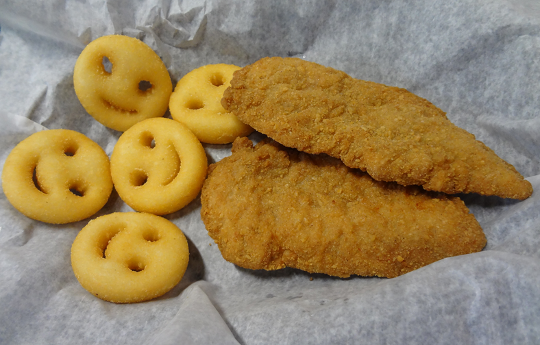

Chicken and Smilies

Chicken and Smilies is a salubrious meal unmatched in its ability to satisfy both adults and children.
The succulency of the breaded chicken complements the fluffy filling hidden in that cheeky smile.
Ingredients
- Breaded Chicken
- Smilies
- Mayo or Ketchup
Steps
- Turn the oven to 180 degrees and place the chicken on the tray, no need to pre-heat.
- At the 10 minute mark place the smilies in an air-fryer.
- Cook the smilies and chicken for a further 10 minutes.
- When the timer is up take both smilies and chicken out of their respective cooking environments.
- Serve both smilies and chicken on a plate with either mayo or ketchup or indulge in both for a special experience.